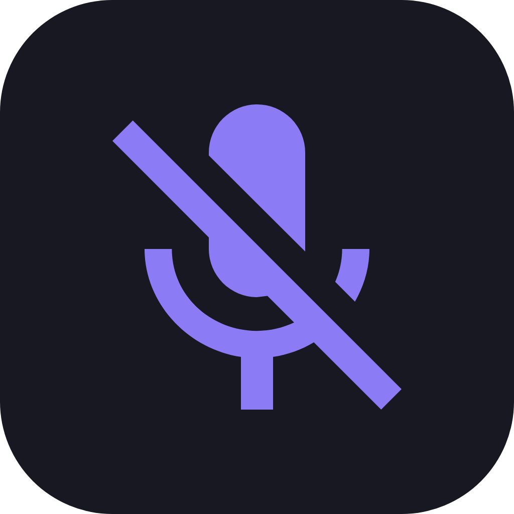

MuteGuard
Local. Focused. Predictable. A personal Windows utility for controlling the meeting microphone through global hotkeys, the system tray and a compact status overlay. Usage and build details live in the repository README.

Local. Focused. Predictable. A personal Windows utility for controlling the meeting microphone through global hotkeys, the system tray and a compact status overlay. Usage and build details live in the repository README.